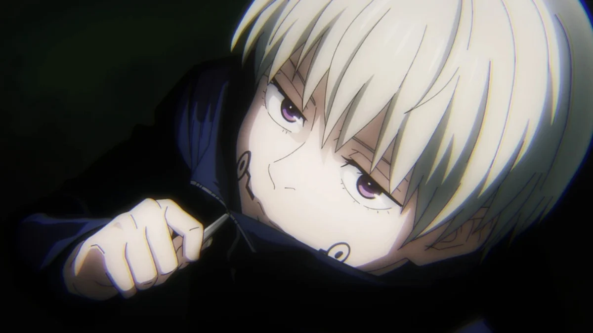

what are the 10 Most Interesting Jujutsu Kaisen Characters?
Jujutsu Kaisen is well-known for having incredibly intricate and well-written side characters, competing with the likes of Bleach and One Piece. The villains are equally complex,
and the female charcters – something that often gets criticized in shonen – are given just as much development as the males.
Of course,there is a select handful of characters within Jujutsu Kaisen that are the most interesting.
Gojo Satoru

28-December 7- 6' 3" (190 cm)
Geto Suguru

27-February 3-6' 3" (190 cm)
Geto has been the main villain of the series so far, and has orchestrated many tragedies, including the Shibuya plot. He is one of few sorcerers to be ever classified as a special-grade, but his true talents shine when it comes to tactics. From the Night Parade of 100 Demons in Shinjuku and Kyoto to the Shibuya Incident, Geto is a brilliant sorcerer and villain. He possesses an extraordinary gift of brains and brawn. His tragic backstory was revealed in the Hidden Inventory Arc, and shed light on his twisted goals.
Kento Nanami
28-July 3rd-6' 0.5" (184 cm)
After graduating Jujutsu High, Nanami left to become a salaryman, but returned to being a sorcerer after having a personal revelation helping an employee at a bakery he frequented. He has a straight-laced, serious personality and barely cracks a smile. That isn't to say that he is a loner, as the bubbly Yuji and Gojo love having him around, and often rope him in to their antics. Nanami is a fan favorite because of his subtle kind-heartedness and stoic nature. He is also very dependable, as Gojo turned to him to train Itadori when he felt as though he couldn't trust anyone else. A first grade sorcerer, Nanami is a joy to watch in action because of his cold and calculating fighting style, and unique cursed technique.
Nobara Kugisaki
16-August 7th-5' 3" (160 cm)
Nobara Kugisaki makes up the female component of the main trio. She represents a middle ground of her own. Although not outwardly the strongest in her class, she continues to prove her strength as a talented Jujutsu sorcerer. It also isn't too much of an exaggeration to say that her weapons of choice nails, a hammer, and a voodoo doll are probably among the most unique and eerie in anime. Her fiery spirit and boundless energy keep everyone on their toes, friend or foe, earning her an effortless spot among the show's most popular characters.
Yuji Itadori

15-March 20th-5' 8" (173 cm)
The protagonist of Jujutsu Kaisen with a heart of gold, Yuji's extreme physical prowess is a mystery. His powers revolve around his melee combat abilities, and although it's a cliché in shonen anime, Itadori's passion and sheer strength makes him one of the most entertaining fighters in the series. From the Divergent Fist to the Black Flash, Itadori's combat abilities even without a cursed technique is exceptional. He is a ray of sunshine that draw people to him, but that side evaporates when his friends or any civilian is in danger. His dedication to public service makes him a great main character.
Ryoumen Sukuna

1000+ Unknown-5' 8" (173 cm)
Sukuna Ryomen is Jujutsu Kaisen's Big Bad, even if he prefers to play a long game. With so many villains ready to take on the Jujutsu sorcerers, he's got plenty of time to lie in wait. Therefore, despite his title as the King of Curses, he hasn't done anything too heinous, making him, undoubtedly, the most likable villain on the show, so far. Despite being a demon on a whole different power level, (other than the occasional demon murder spree and psychotic rant), Sukuna Ryomen is a fairly easy-going person. Ironically enough, this demon of great caliber even let Yuji Itadori take over his own body. Sukuna is therefore bound to him, making for the ultimate odd couple.
Toji Fushiguro

N/A-188 cm (6'2")-December 31
Toji Fushiguro doesn’t have the best character, but his strength and unaffected demeanor make him a recent fan favorite. Toji always looks out for himself. Even though he was born into the Zenin clan and later took the name Fushiguro, Toji is not affiliated with anyone in particular. Rather, Toji prefers to follow where the money flows. One of the most interesting things about Toji is how powerful he is without having any Cursed Energy. Because of his lack of Cursed Energy, he can remain invisible to scouts, but Toji’s real power is in his fighting skills. Even though he doesn’t have a Cursed Technique or any other inner magical power, Toji faces Satoru Gojo head-on. Though Toji eventually loses to Goji, the fact a non-Curse-user could stand up to Gojo is remarkable, and one of the many reasons why fans love Toji.
Megumi Fushiguro

15-175 cm (5'9")-December 22
Both Gojo and Itadori together make an extremely hilarious comedic duo, perhaps a little bit too much. Megumi Fushiguro's more subdued and austere nature serves to keep their team grounded, even if he ends up the butt of many of their jokes. Hailing from a revered Sorcerer family, Megumi is powerful in his own right, with clear potential that's even caught the eye of Sukuna himself. Megumi's mysterious background makes him intriguing to fans, but the banter-fueled dynamic he and Yuji bring to the show makes them ceaselessly entertaining to watch.
Yuta Okkotsu

17-175.3 cm (5'9″)-March 7
Yuta Okkotsu was once a timid young man who became a Special Grade Cursed Human upon the passing of his best friend, Rikka. Although Yuta doesn’t initially have much confidence, Rikka’s cursed power more than makes up for any of Yuta’s insecurities. Eventually, Yuta trains under Satoru Gojo and becomes one of the top second-year Jujutsu Sorcerers. Yuta remains kind and humble except for when he’s in a fight with someone who hurt his friends. When that happens, he lets the full force of his anger out, showing his enemies his true abilities. Yuta’s newfound confidence and his generally welcoming personality endeared him to fans when he first appeared in Jujutsu Kaisen 0.
Toge Inumaki
17-164 cm (5'5")-October 23
Jujutsu Kaisen is filled with interesting characters, each more peculiar than the other. Toge Inumaki is no different. Sorcerers in the Jujutsu Kaisen universe all use Cursed Techniques in one way or another. For Inumaki, it is through his mouth. Due to his "Cursed Speech," signified by the marks on his tongue and both cheeks, he can't speak normally, since his words are quite literally cursed. Instead, Toge speaks with a limited vocabulary of words that are safe to use, and strangely enough, these safewords are made up of rice ball ingredients, such as "salmon" and "kelp."